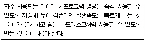

PC정비사-2급 (2006-07-16 기출문제)
1과목: PC유지보수
1. 컴퓨터를 부팅시킬 때, 모든 부착물이 제 위치에 있으며 또한 작동 가능한 상태인지를 확인한 뒤, 운영체제를 하드디스크나 디스켓으로부터 읽어 램에 적재시키는 것은?
- PCI 칩셋
- Shadow RAM
- BIOS
- I/O 칩셋
(정답률: 76%)

2. 메인보드가 4개의 S-ATA 포트와, 2개의 E-IDE 포트를 지원한다고 할 때, 최대로 연결할 수 있는 하드디스크의 숫자는?(단, 추가적인 하드디스크 컨트롤러나 USB 등의 외장형 하드디스크는 사용하지 않는다.)
- 6대
- 7대
- 8대
- 9대
(정답률: 79%)
3. BIOS에 대한 설명 중 잘못된 것은?
- 하드디스크 용량, 키보드 및 플로피디스크 드라이브의 동작 상태를 진단하는 정보가 수록되어 있다.
- CMOS 셋업은 전원을 내린 후에도 내장된 충전식 배터리에 의해 작동되기 때문에 설정된 데이터는 저장되어 있다.
- BIOS의 설정 내용에 따라 PC가 부팅되지 않을 수 있으므로 주의하여 설정하여야 한다.
- 메인보드에 메인메모리(RAM)를 추가로 장착한 경우 반드시 BIOS 설정에서 메모리 용량을 다시 설정 하여야 부팅이 가능하다.
(정답률: 63%)
4. 전자파에 대한 내용 중 잘못된 것은?
- 전자파가 일으킬 수 있는 증상으로는 나른함, 불면증, 신경 예민, 두통, 숙면에 관여하는 멜라토닌 호르몬 감소, 맥박의 감소 등이 있다.
- 전자파는 온도와 습도에 많은 영향을 받으므로 작업 시에는 적절한 온도와 습도를 유지하도록 해야 한다.
- 강한 전자파의 경우에는 과학적으로 유해성이 검증되고 있으며, 각국에서는 인체 보호를 위하여 최대 노출 한계를 규정하고 있다.
- 전자파 고노출 직업군에는 발전소 및 변전소 근무자, 대전력 사용 공장 근로자, 레이더 기지 근무자, 방송국 송신소 및 중계소 근무자, 컴퓨터를 장시간 사용하는 프로그래머, 컴퓨터 그래픽 디자이너 등이 있다.
(정답률: 85%)
5. 아웃룩 익스프레스에서 메일을 쓴 후 전송하려고 했으나, 화면에 SMTP 서버 에러 메시지가 표시 되었다. 이에 대한 원인으로 가장 적당한 것은?
- 받는 메일 서버의 설정이 잘못되어 있다.
- 아웃룩 익스프레스의 메일 저장 용량이 초과된 경우 발생할 수 있다.
- 보내는 메일 서버의 설정이 잘못되었거나, SMTP 서버가 동작하지 않는 상태라고 볼 수 있다.
- 받는 메일 서버와 보내는 메일 서버가 반드시 일치해야만 인터넷 메일을 보낼 수 있는데, 두 메일 서버가 일치하지 않는다.
(정답률: 78%)
6. BIOS에서 설정해 놓은 암호를 잊어버린 경우 적절한 고장 수리 방법은?
- 데이터 버스 케이블을 마더보드에서 제거한 후 다시 연결한다.
- RAM을 마더보드에서 제거한 후 다시 장착한다.
- 컴퓨터 주변 장치를 모두 제거한 후 재부팅시킨다.
- CMOS 정보를 삭제하는 점퍼를 연결시켜 CMOS 정보를 초기화시킨다.
(정답률: 89%)
7. Windows의 시스템 리소스를 확보하기 위한 방법으로 잘못된 것은?
- 꼭 필요한 소프트웨어가 아니면 제거한다.
- 시스템 트레이에 등록되는 프로그램은 리소스를 많이 사용하므로 최소화 한다.
- 바탕화면의 테마는 가능하면 많은 색상을 사용하도록 한다.
- 시작 프로그램은 최대한 단순하게 유지한다.
(정답률: 77%)
8. CD-레코딩 중에 ‘Buffer Underrun’ Error 메시지가 출력되었을 때 가장 올바른 대처 방법은?
- CD 레코더의 렌즈에 이상이 있을 경우 발생할 수 있으므로, 렌즈를 교체한다.
- CPU나 HDD의 전송속도가 너무 느릴 경우 발생할 수 있으므로, 좀 더 빠른 CPU나 HDD로 교체한다.
- CD 레코더 프로그램이 잘못 설치되어 나타나는 현상이므로, 프로그램을 다시 설치한다.
- CD 레코더의 속도가 너무 느려서 나타나는 에러이므로, 레코더를 더 빠른 제품으로 교환한다.
(정답률: 48%)
9. Windows XP의 ‘시스템 종료’ 명령을 사용하여 컴퓨터 전원을 끄려고 했으나 자동으로 꺼지지가 않는다. 자동으로 꺼지도록 하려고 할 때 확인해야 될 사항으로 가장 적당한 것은?
- CMOS Setup의 Power Management 항목이 Disable로 되어있는지 확인한다.
- 파워 서플라이의 전력 부족인지 확인한다.
- 시스템의 가상 메모리가 부족할 경우 발생할 수 있으므로 가상 메모리의 크기를 확인한다.
- 디스플레이 등록정보의 화면 재생 빈도가 너무 높게 설정되어 있는지 확인한다.
(정답률: 67%)
10. 현재 PC의 전원 공급 장치 출력 전압을 측정하려고 할 때, 회로 시험기의 선택 스위치의 올바른 설정 상태는?
- ACV
- DCV
- mA
- R
(정답률: 60%)
11. Plug & Play를 완벽히 지원하기 위해 필요한 다음 요소 중 잘못된 것은?
- 장치 스스로에 대한 정보 제공 기능
- Processor의 실행코드에 대한 계층적 권한 부여
- 주변기기와 시스템간의 호환성
- 운영체제의 Plug & Play 기능 지원
(정답률: 81%)
12. 일반적으로 LCD 모니터의 휘도(밝기)를 나타내는 단위로 적당한 것은?
- bps
- dpi
- MHz
- cd/㎡
(정답률: 61%)
13. POST과정 중 ‘BIOS checksum error'가 발생했다. 이 에러의 의미와 해결방법으로 잘못된 것은?
- CMOS에 저장된 내용이 POST 과정의 결과와 맞지 않다는 의미이다.
- CMOS의 내용을 읽는데 실패했다는 의미이다.
- CMOS 셋업을 다시 하면 에러를 해결할 수 있다.
- CPU의 클럭 설정이 잘못된 경우 발생하므로 CPU를 교체한다.
(정답률: 75%)
14. VDT 증후군의 원인에 대한 것 중 잘못된 것은?
- 전자파
- 작업자와 스크린과의 거리
- 화면의 크기와 밝기
- 시스템 내부의 먼지
(정답률: 86%)
15. E-IDE 하드디스크에 케이블을 연결하려고 한다. 이때 연결 방향으로 올바른 것은?
- 흰색이 있는 부분을 1번 핀으로 접속한다.
- 어떻게 연결해도 상관없다.
- 붉은 색이 있는 부분을 1번 핀으로 접속한다.
- 붉은 색이 있는 부분을 1번 핀의 반대 방향으로 접속한다.
(정답률: 66%)
2과목: PC운영체제
16. 운영체제가 사용하는 파일시스템에 대한 설명으로 올바른 것은?
- Windows 98 SE는 기본적으로 FAT16/FAT32/NTFS를 지원한다.
- Windows XP는 기본적으로 FAT32를 지원하지 않는다.
- FAT16에서 기록된 파일은 FAT32시스템에서도 액세스할 수 있다.
- FAT16은 하드디스크의 단일 볼륨 크기를 8.4GB까지 구성할 수 있다.
(정답률: 56%)
17. 컴퓨터 바이러스를 치료할 수 있는 프로그램이 아닌 것은?
- V3+
- Norton Antivirus
- Scandisk
- Virus Chaser
(정답률: 86%)
18. Windows XP의 SFC(시스템 파일 검사기)에 대한 설명 중 잘못된 것은?
- 보호된 모든 시스템 파일을 검색하며 잘못된 버전을 올바른 버전으로 복원한다.
- Windows XP의 제한된 계정은 이 명령을 사용할 수 없다.
- /SCANNOW 옵션을 붙이면 시스템 파일을 즉시 검사한다.
- /SCANBOOT 옵션을 붙이면 자동으로 재부팅을 하면서 시스템 파일을 검사한다.
(정답률: 37%)
19. 영문자 한 글자를 나타낼 수 있는 최소 단위는?
- Bit
- Byte
- KByte
- MByte
(정답률: 71%)
20. Windows XP의 Outlook Express에서 할 수 없는 작업은?
- 사용 중인 주소록을 Text 파일 형태로 내보낼 수 있다.
- 다른 컴퓨터의 Outlook Express에서 사용 중인 주소록을 파일로 저장하여 가져올 수 있다.
- 뉴스 그룹 계정을 설정하여 뉴스 그룹의 내용을 확인할 수 있다.
- FTP 계정을 설정하여 원격 컴퓨터에 있는 파일을 다운로드 받을 수 있다.
(정답률: 50%)
21. 다음 중 에러를 자신이 찾아 수정할 수 있는 코드는?
- 패리티 코드(Parity Code)
- 해밍 코드(Hamming Code)
- 그레이 코드(Gray Code)
- BCD코드(Binary Coded Decimal)
(정답률: 84%)
22. 다음 중 Windows XP 레지스트리의 기본구성 항목이 아닌 것은?
- HKEY_CLASSES_ROOT
- HKEY_CURRENT_USER
- HKEY_LOCAL_MACHINE
- HKEY_DYN_CONFIG
(정답률: 78%)
23. Windows XP에서 사용자 운영체제의 오류보고에 대한 설명으로 잘못된 것은?
- Windows XP 서비스 팩 2 이후 Windows XP의 오류는 Windows XP의 보안센터에서 관리하므로 오류보고를 사용할 수 없다.
- [제어판] - [시스템]을 열고 [고급] 에서 오류 보고를 클릭하여 내용을 설정한다.
- ‘오류 보고 사용’을 선택한 후 운영체제 오류가 발생하면 오류 코드가 있는 파란 화면이 나타나고 모든 컴퓨터 작업이 중지된다.
- 에러가 발생한 후 컴퓨터를 다시 시작하면 오류 보고 대화 상자가 나타난다.
(정답률: 58%)
24. Windows XP에서 여러 사용자들에게 디스크 할당량을 주려고 한다. 현재의 파일 시스템이 FAT32일 때 해야 할 작업으로 올바른 것은?(단, 현재 있는 파일들을 삭제하면 안 된다.)
- FAT32는 디스크 할당량을 줄 수 없으므로 CONVERT명령을 이용해서 NTFS로 파일시스템을 변경한다.
- FAT32는 디스크 할당량을 줄 수 없으므로 다시 포맷을 한 후 NTFS파일 시스템으로 변경한다.
- [컴퓨터 관리] - [디스크 관리]에서 사용할 하드디스크를 동적 디스크로 변환한다.
- 디스크 할당을 위해서는 각 사용자 별로 하드디스크의 파티션을 분할해야 하므로 파티션을 다시 분할한다.
(정답률: 32%)
25. Windows 98과 비교 했을 때 Windows XP에서 새로 지원하는 기본적인 기능이 아닌 것은?
- PPPoE 지원
- 개인 방화벽 기능
- 빠른 사용자 전환 기능
- 시스템 복원 기능
(정답률: 49%)
26. 운영체제의 범주에 속하지 않는 것은?
- MS-DOS
- JINI
- UNIX
- Windows XP
(정답률: 79%)
27. Windows XP 설치 시 기본적으로 제어판에서 제공되지 않는 아이콘은?
- 마우스
- 사운드 및 오디오 장치
- CD-ROM
- 시스템
(정답률: 77%)
28. Windows XP에서 현재 실행중인 응용프로그램이나 열려 있는 폴더를 닫으려고 할 때 사용되는 단축키는?
- Alt ＋ X
- Ctrl ＋X
- Alt ＋ F4
- Ctrl ＋ F4
(정답률: 72%)
29. 프로세스 스케줄링의 종류가 아닌 것은?
- Round Robin
- FIFO(First In First Out)
- Semaphore
- Shortest Job First
(정답률: 55%)
30. 프롬프트 모드의 FTP 프로그램으로 사용하여 파일을 업로드 할 때와 다운로드할 때 사용하는 FTP 명령어로 올바른 것은?
- up - down
- put - get
- upload - download
- save - send
(정답률: 69%)
3과목: PC주변기기
31. 기억장소와 램의 역할에 대해 설명한 것 중 잘못된 것은?
- 램은 CPU가 작업한 결과물을 보관하는 주기억장치이다.
- 램은 기억장소로 사용하는 반도체 칩을 말한다.
- 램에 저장한 것은 영원히 지워지지 않는다.
- 램에 저장한 것은 디스크로 보관해야 영구 보존이 가능하다.
(정답률: 83%)
32. 디지털카메라 연결을 위한 인터페이스 방식으로 적당하지 않은 것은?
- USB(Universal Serial Bus)
- Serial Port
- IEEE-1394
- PCI
(정답률: 63%)
33. 다음 중 (가), (나)에 들어갈 가장 올바른 말은?

- CMOS메모리, 캐시메모리
- 캐시메모리, 가상메모리
- 캐시메모리, 램 디스크
- 가상메모리, 램 디스크
(정답률: 54%)
34. 입자가 아주 작은 잉크를 노즐을 이용하여 종이 위에 뿌리는 방식으로 인쇄하는 비충격식 프린터는?
- 잉크젯 프린터
- 레이저 프린터
- 라인 프린터
- 도트 매트릭스 프린터
(정답률: 86%)
35. 컴퓨터를 사용하는 도중 갑자기 정전되면 작업 중인 데이터를 잃어버리거나 심한 경우 시스템에 치명적인 손상을 입게 된다. 갑작스런 정전이 발생할 경우 일정 시간동안 전기를 공급하여 시스템을 안정적으로 사용하도록 도와주는 장치는?
- AVR
- UPS
- CPS
- IPS
(정답률: 52%)
36. PCMCIA(Personal Computer Memory Card International Association) 카드의 타입과 용도를 짝지어 놓은 것 중 올바른 것은?
- 타입 Ⅰ - SCSI (Small Computer System Interface)
- 타입 Ⅱ - 모뎀
- 타입 Ⅱ - 자기하드디스크
- 타입 Ⅲ - 플래쉬 메모리
(정답률: 34%)
37. 하드웨어에 장착된 칩 속에 삽입되어 영구적으로 컴퓨터 장치의 일부가 되는 소프트웨어로 필요에 따라 프로그램을 수정할 수도 있는 것은?
- RAM
- Hard Disk
- Firmware
- Middleware
(정답률: 75%)
38. 사운드의 대표적인 저장 방식으로 Wav를 많이 사용하고 있다. Wav가 사용하는 음원 방식은?
- AM
- PCM
- FM
- MIDI
(정답률: 40%)
39. 사용자가 프로그램 할 수 없는 ROM은?
- EPROM
- PROM
- EEPROM
- Mask ROM
(정답률: 68%)
40. 인텔이 자사의 프로세서를 위해 정상적인 환경에서 동작하도록 한 전원공급방식을 규정한 용어는?
- BTX(Balanced Technology Extended)
- FPGA(Field Programmable Gate Array)
- VRM(Voltage Regulator Module)
- ATX
(정답률: 46%)
41. AMD CPU인 Athlon XP는 CPU 이름을 ‘Athlon XP 2200+’과 같이 표시 한다. 이 이름 중 ‘2200+’의 의미는?
- FSB
- 모델 넘버
- 버전
- 작동 클럭
(정답률: 63%)
42. CPU의 주요 기능에 대한 설명 중 잘못된 것은?
- 버스 인터페이스 유닛 : CPU와 주기억장치를 비롯한 외부 장치와 연결되는 부분
- 컨트롤 유닛 : CPU 내부의 모든 작업 관리
- 데이터 캐시 : 십진법 단위로 쪼갤 수 없는 소수점 이하의 숫자를 처리
- 디코딩 유닛 : ALU가 이해할 수 있는 명령으로 바꾸어 줌
(정답률: 76%)
43. 메인보드에서 키보드와 마우스만을 연결하기 위한 단자로 +5V 전원이 제공되는 인터페이스는?
- USB
- PS/2
- IEEE1394
- IrDA
(정답률: 70%)
44. 일반적으로 외장형 하드디스크를 연결하는데 사용되지 않는 인터페이스는?
- SATA
- IEEE1394
- E-IDE
- USB
(정답률: 49%)
45. 하드디스크에 대한 설명 중 잘못된 것은?
- PIO(Programed Input Output) Mode는 CPU가 직접 하드디스크의 데이터 입출력을 간섭하는 방식이고, DMA방식은 별도의 컨트롤러가 데이터 입출력을 수행한다.
- 용량이 100GB인 하드디스크의 전체 용량을 사용하기 위해서는 하드디스크의 모드를 반드시 CHS 모드로 변경하여야 한다.
- LBA(Logical Block Addressing) mode는 구형 IDE/ATA 인터페이스가 528MB 용량까지 밖에 인식할 수 없던 것을 개선하여 그 이상 인식하도록 개선한 방식이다.
- 디스크 원판인 플래터(Platter)를 회전시켜 주는 모터를 스핀들 모터(Spindle motor)라고 부른다.
(정답률: 66%)
4과목: PC네트워크
46. 네트워크 장비 중 리피터와 허브 등이 속하는 OSI 7 계층은?
- Physical Layer
- Data Link Layer
- Network Layer
- Session Layer
(정답률: 39%)
47. 내부의 신뢰성 있는 네트워크와 외부의 신뢰성 없는 네트워크 사이에 존재하여 불법 침입을 차단하기 위한 시스템은?
- Firewall
- Filtering
- Web Server
- DNS
(정답률: 83%)
48. 인터넷(WWW)의 표준 프로토콜로 사용되는 것은?
- Apple Talk
- NetBEUI
- TCP/IP
- RIP
(정답률: 76%)
49. 다음 DNS의 도메인명 중에서 도메인명을 잘못 설명하고 있는 것은?
- com : 상업적인 회사
- edu : 학교 등 교육기관
- mil : 국제단체
- org : 비영리단체
(정답률: 64%)
50. 컴퓨터에 할당된 IP 주소를 이용하여, 해당 컴퓨터가 속한 네트워크 식별자를 알아내기 위해 사용하며, 또한 클래스 기반의 방법보다 더 많은 식별자를 이용할 수 있도록 하기 위해 사용하는 것은?
- 게이트웨이
- 서브넷 마스크
- DNS 서버
- WINS 서버
(정답률: 66%)